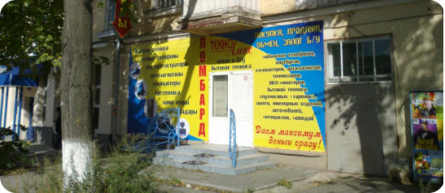
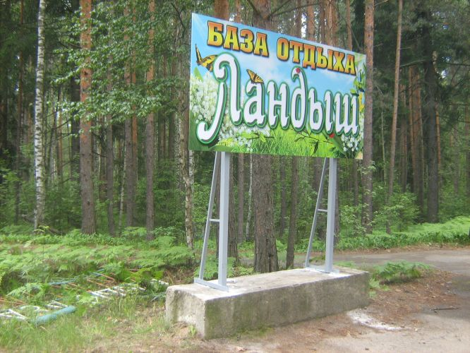
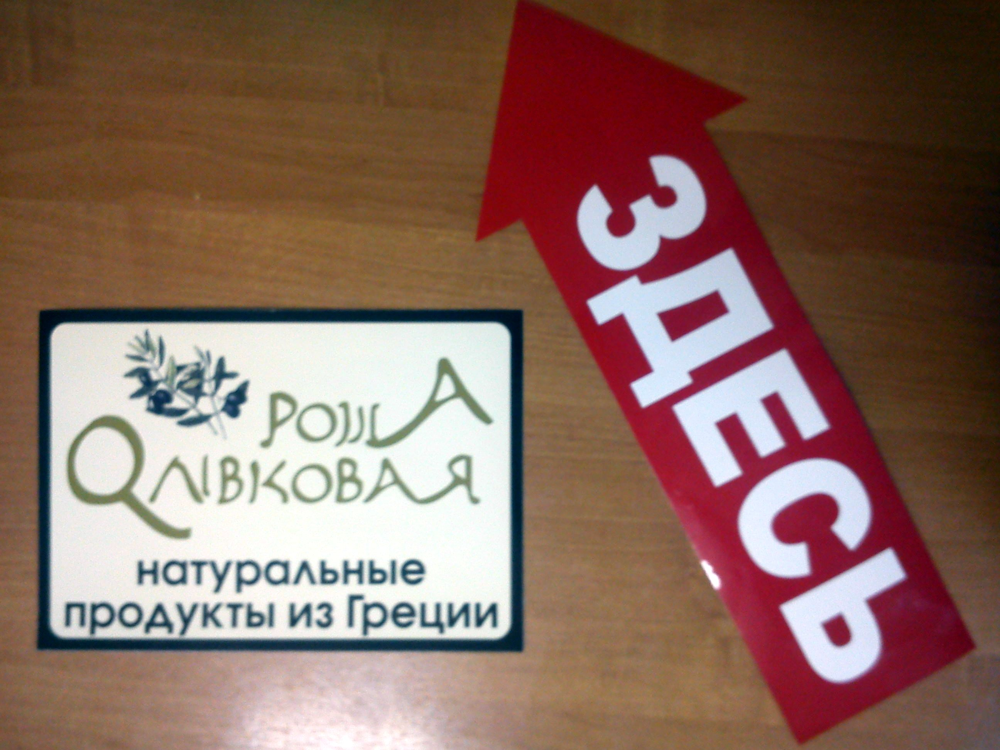
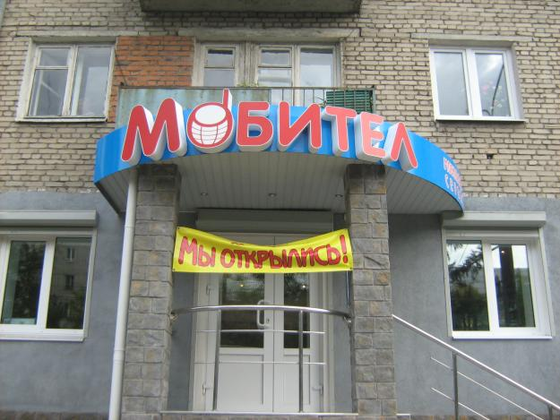
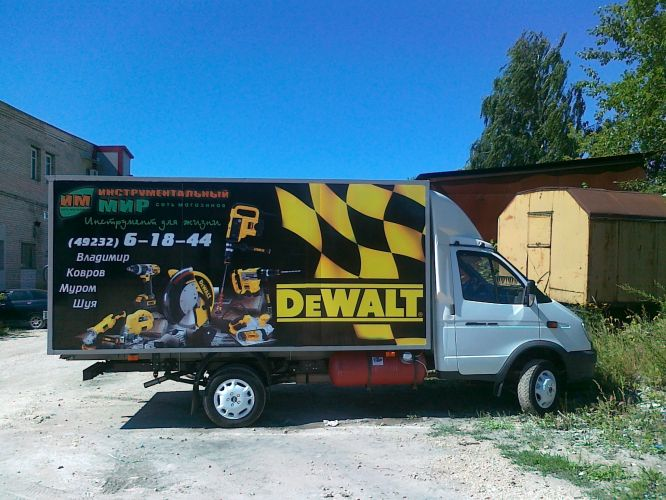
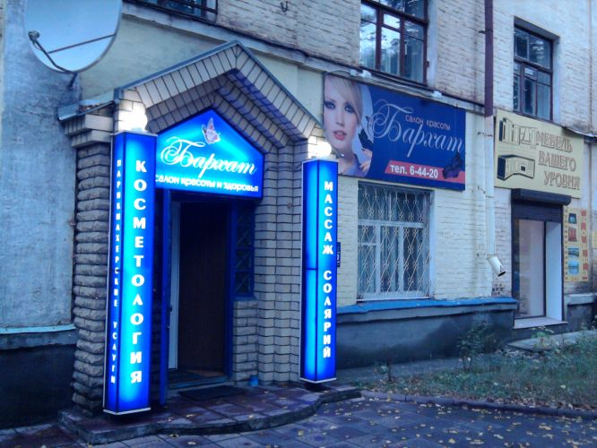
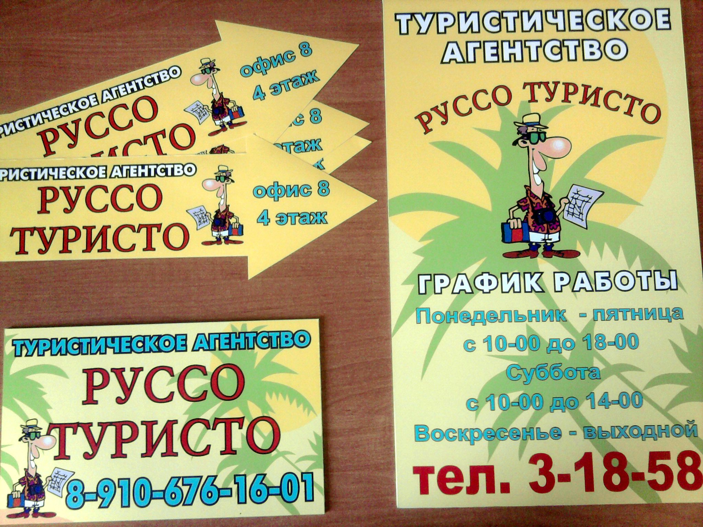
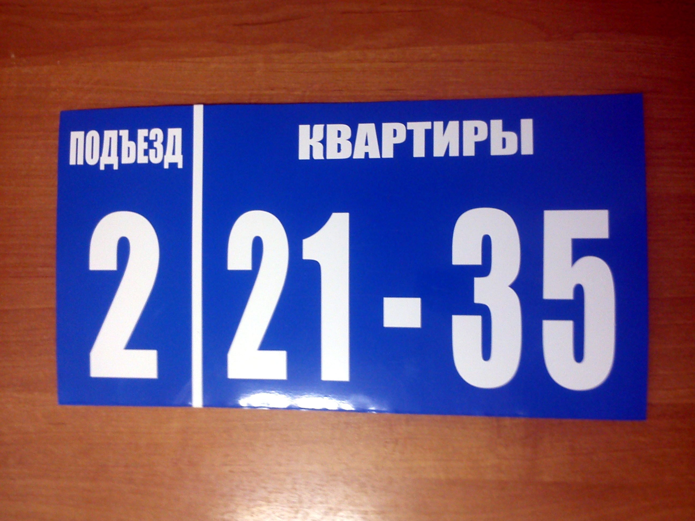
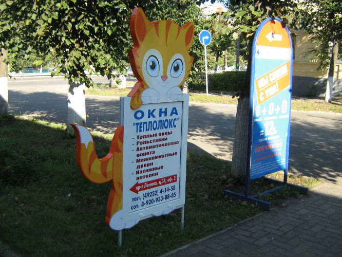

Наружная реклама
Баннер
Настенные рекламные конструкции в виде щитов являются одним из самых распространенных видов наружной рекламы,
поскольку:
• есть возможность делать наружную рекламу любого размера в пределах стены здания;
• оптимальное соотношение видимости с ценой производства;
• долгосрочность службы подобных видов рекламы.
Большим конкурентным преимуществом настенных щитов (вывесок) является достаточно легкая замена рекламного
изображения. При этом рама остается прежняя, а баннер перепечатывается в соответствии с новым эскизом и
монтируется на уже существующую установленную раму. По этому принципу работает большая часть рекламы, которая
сдается в аренду под конкретного рекламодателя агентствами, которые выставляют рекламные места под рекламу
соответствующего рекламодателя.
Баннер (англ. banner — флаг, транспарант) — графическое изображение рекламного характера. Баннеры размещают
для привлечения потенциальных клиентов или для формирования имиджа. Под словом «баннер» обычно подразумевается
тканевое полотно прямоугольной формы информационного или рекламного содержания.

Баннер может размещаться как на рекламном щите, так и на стене здания, для этого используются каркасы для ровной натяжки
баннерного полотна.
Каркасы могут быть как металлические, так и деревянные. На каркасах так же используется широкий торцовочный
уголок по периметру баннера придающий ему аккуратный законченный вид и скрывающий элементы крепления (скобы,
стяжки или веревку).
Данные конструкции используются в качестве информационных щитов, как правило, размещаются на фасадах зданий.
Можно использовать внешний подсвет галогеновыми или металлогалогеновыми прожекторами 150, 300 или 500 Вт.
Изготовление указателей
Указатели концентрируют на себе внимание миллионов людей, т.к. являются системой городского
ориентирования. Это самый читаемый и достоверный источник информации. Размещение информации на
городских указателях зарекомендовало себя как недорогой и очень эффективный способ наружной рекламы.
Указатель может содержать информацию о вашей компании, логотип, адрес и т.д.

Мы предлагаем комплекс услуг по изготовлению и установке указателей в Коврове.
Указатели устанавливаются в городских зонах транспортных и пешеходных потоков, в деловых и торговых
центрах, на улицах и перекрестках города, в непосредственной близости от объектов городского значения,
а также других местах, интересующих заказчика.
Указатели могут быть без подсветки. А так же указатель может выполняется в виде объемного
двухстороннего модуля с внутренней подсветкой лампами дневного света Указатели размещаются на столбах
городского освещения либо на самостоятельных опорах. Электропитание подается от системы городского
освещения.
Наклейка
Наклейка (стикер) - это изделие, изготовленное на самоклеющемся материале. Очень широко используются в рекламных целях ("Реклама и полиграфия"). Они легко и надолго прикреиваются к разным поверхностям.

Структура наклейки:
верхний слой - бумажная, или плёночная основа с клеющей обратной стороной
нижний слой - специальная бумага, предохраняющая клеющую основу от прилипания к другим поверхностям
раньше времени.
Как происходит отделение наклейки от основы:
нижний слой может иметь специальные надломы, чтобы легче снимать верхнуюю часть. Либо имеются надсечки,
наоборот, на верхнем слое (специальные обрамления по контуру).
Наклейка может быть исполнена в один, два цвета, либо любым цветовым решением (полноцветом)
Наклейки могут быть любой формы, красочности и размера.
Объемные буквы по технологии контураж
Контражур - это эффект, используемый для подсветки задней части рекламных конструкций.

Технология контражур, используемая для подсветки объемных букв, в последнее время приобретает все большую
популярность за счет того, выглядит не стандартно, окружает ярким светящимся ореолом буквы или рекламные
элементы. Это прекрасное решение для создания особого колорита в рекламных целях, которое идеально подходит
для фасадов магазинов, ночных клубов, круглосуточных магазинов, а также коммерческих зданий, например, офисов,
небольших рекламных площадок и передвижных презентаций. Подсветка может осуществляться любым цветом.
Особого эффекта достигает технология контражура с использованием светодиодов, которые устанавливаются
на тыльной стороне букв. Благодаря этой технике контражурные объекты поражают Ваше воображение,
зависая над светом и выделяясь на его фоне своим основным контуром. Не секрет, что часто объемные
буквы по технологии контражур можно встретить и в современных внутренних интерьерах, использующих
фантасмагорию дизайнерских идей.
Объемные буквы с внутренней подсветкой
Объемные буквы – наиболее популярный вид наружной рекламы. Изготавливаются из
разных видов ПВХ пластика, а так же в комплексе с другими материалами (акрил, сотовый поликарбонат,
композит, оргстекло и д.р.) Объемные буквы могут быть плоские или объемные, световые (с подсветкой:
внутренней, наружной, контражурной, с открытым неоном) и без подсветки совсем.
Также, в зависимости от применения, объемные буквы изготавливаются из разных материалов (пвх, алюминия,
оргстекла, металла, пенопласта). Объемные буквы с внутренней подсветкой наиболее распространены.
Для подсветки используют неон, лампы накаливания, светодиодные модули, в больших буквах используют
люминесцентные лампы.
За счет применения контроллеров, объемные буквы получают возможность светодинамики.
Объемные буквы с внутренней подсветкой отдаленно это световые короба, только сложной формы, что вынуждает
нас использовать несколько иные материалы. По способу изготовления они более трудоемки, чем световые короба,
что отражается на их стоимости. Однако, они широко применяются при оформлении магазинов, салонов, ресторанов,
кафе, баров, дискотек из-за того, что они придают фасаду рельефность и солидность, а в сочетании со световым
оформлением запоминающиеся образы. Используются как для наружного, так и для внутреннего оформления.
Объемные буквы, используемые в качестве фасадной вывески или рекламного объявления, уже давно снискали себе
признание среди рекламодателей.
Наиболее распространенный вариант такой рекламы - использование объемных букв с внутренней ламповой,
светодиодной или неоновой подсветкой для обозначения наименования компании или магазина. Однако, в
зависимости от конкретных пожеланий заказчика, объемные буквы можно использовать для создания нетривиальных,
выразительных и визуально привлекательных рекламных образов.
Например, наши специалисты могут использовать при разработке дизайна и изготовлении объемных световых букв
фирменный шрифт и цвета эмблемы Вашей компании, что позволит индивидуализировать стиль рекламной вывески.
Кроме того, возможно создание комбинированных объектов, например, объемные буквы в сочетании с постером или
лайтбоксом, а также использование световых спецэффектов. Очень действенным и безукоризненным с маркетинговой
точки зрения ходом является создание из нескольких объемных букв аббревиатуры или логотипа Вашей компании -
такой метод положительно влияет на фактор узнаваемости и запоминаемости бренда.
Изготовление и монтаж
Наша компания разработает для Вас дизайн объемных букв или логотипов, поможет выбрать оптимальное техническое
решение и возьмет на себя весь процесс изготовления этого средства наружной рекламы.
Собственная бригада монтажников позволяет установить конструкцию любого размера и сложности, в том числе
и крышную установку.
Псевдообъемный элемент
Псевдообъемный элемент представляет собой букву либо знак, вырезанный из пластика и вынесенный на специальных ножках на некоторое расстояние от несущей плоскости.
В зависимости от размеров псевдообъемные элементы изготавливаются из пластика различной толщины. Иногда для придания букве большей привлекательности (особенно при изготовлении фасадных вывесок) используется профиль трим. Профиль повторяет конфигурацию буквы, образуя с фронтальной части контрастный кант. Благодаря своей ширине трим-профиль придает букве еще большую видимость объема. При правильном использовании цвета фона несущей плоскости псевдообъемные буквы невозможно отличить от объемных. Использование световых эффектов (например, контурного освещения) только подчеркивает это сходство. Псевдообъемные буквы несколько дешевле, чем объемные. Поэтому, если Ваша фасадная вывеска не требует внутренней подсветки, то в большинстве случаев при ее изготовлении целесообразно использовать псевдообъемные буквы и знаки.
Растяжка
Растяжка – это рекламная конструкция на баннерной основе, находящаяся непосредственно над дорогой (обычно натягивается между двумя столбами). Плюсы этого средства рекламы в том, что его целевая аудитория – автомобилисты и пассажиры, то есть люди с высоким или средним достатком. Такая реклама является одновременно недорогим и эффективным средством привлечь к своей продукции или услугам потенциального клиента, за счет чего она и получила такую сильную популярность и широкое распространение.
Реклама на транспорте
Реклама на транспорте – самый выгодный и эффективный способ наружной рекламы, дающий лучшие результаты в соотношении цены и качества. Важной особенностью данной рекламы является ее мобильность, за счет чего существенно возрастает количество охватываемой рекламой аудитории по сравнению, например, с биллбордами. Данная реклама размещается на движущемся объекте и охватывает представителей практически всех социальных групп, при этом является легкозапоминающейся и легкоусваиваемой.

ТЧтобы осуществить рекламу этим способом, обратитесь в наше рекламное агентство «НАРУЖКА». Мы сумеем профессионально организовать рекламу на общественном и автомобильном транспорте. Вы сможете выбрать оптимальный вид общественного транспорта и маршруты для рекламы, чтобы охватить определенный район города. Мы создадим для вас дизайн рекламного изображения и оформим транспортное средство, сделав вашу рекламу запоминающейся, броской и заметной для всех участников дорожного движения – водителей и пешеходов.
Световые короба
Световые короба(lightboxes – англ.) - наиболее распространенный и доступный вид световой наружной рекламы.
При относительно небольшой цене можно позволить себе большую площадь рекламного поля, что не может не сказаться
положительно на восприятии Вашей рекламы. Световые короба – наиболее информативные рекламные носители, как днем,
так и ночью, а за счет создания любой формы, конфигурации и подсветки, осуществляемой либо люминесцентными лампами
или светодиодными модулями, световые короба эффективно выделяются в среде городской рекламы. Световые короба по
конструкции представляют собой ящики.

Самый распространенный вариант - односторонний, простой формы, с одной лицевой панелью и нанесенным на нее
рекламным изображением. В другом варианте световые короба могут иметь фигурный контур, представлять собой объемные
панели в виде различных предметов, иметь дополнительные конструктивные элементы. Световые короба могут быть
изготовлены из отфрезерованных композитных панелей (с возможной инкрустацией букв из акрилового стекла) либо
алюминиевого профиля или ПВХ пластика оклеенного виниловой пленкой. Передняя панель может быть выполнена из
сотового поликарбоната, акрилового стекла, и является полупрозрачной. Лампы, светильники и электропроводка
крепятся на задней панели. Световые короба подсвечиваются изнутри. На лицевую часть короба наносится рекламное
изображение, выполненное с помощью печати или в виде аппликации из виниловой пленки.
Световые короба могут иметь различные способы крепления, выбор которых зависит от места, в котором данная
наружная реклама будет расположена.
Световые короба, могут быть односторонними или двусторонними. Односторонние световые короба располагаются на
зданиях вдоль фасада, двусторонние (называемые также панель-кронштейнами) – консольно, т.е. перпендикулярно фасаду.
Световые короба могут иметь как прямoугольную форму, так и любую другую, в зависимости от Ваших пожеланий.
Таблички
Первое, что видит клиент, стоящий у порога Вашей компании, – табличка с названием предприятия, далее следует табличка с указанием должности и имени представителя компании, таблички других сотрудников из Вашей команды. Потенциальный заказчик Вашей продукции или услуг еще общался с Вами, не ознакомился с условиями сотрудничества, но он уже оценил уровень Вашей компании по тому, какие таблички висят у входа. В зависимости от его впечатления, Вы увидите или положительно настроенного, или немного разочарованного человека.

Офисные таблички всегда были незаметными творцами имиджа компании, ведь именно небольшие информационные таблички могут сказать об уровне Вашего предприятия немало, таблички – отражатель деловых успехов коллектива и предприятия. Понимая важность, которую несут фасадные таблички или таблички для офиса, важно со всей ответственностью отнестись к процессу их разработки, изготовления и установки. ООО "Наружка" изготавливает таблички всевозможных форматов, применяя при этом самые современные материалы, технологии, свой опыт, профессионализм в области рекламы и бизнеса.Производство табличек происходит по индивидуальному заказу и включает в себя разработку дизайна. Современный бизнес любит тех, кто делает максимум для развития своей фирмы, для успеха своей деловой команды. Офисные или фасадные таблички от нашей компании – не дань моде или излишняя трата средств, стильная табличка – лицо компании, своеобразный швейцар, стоящий в дверях и открывающий двери клиенту в мир Вашей компании. Хочется, чтобы этот «швейцар» был всегда опрятным и солидным, правда? Тогда остается сделать только одно – позвонить нам!
Указатели улиц
Указатели улиц, номера домов, аншлаги, таблички Аншлаги, номера домов помещаются на фасады зданий на высоте 2-2.5 метра. Традиционное расположение на углу дома. Данные изделия являются неотъемлемой частью оформления фасадных групп предприятий, домов, загородной недвижимости и являются единственным способом ориентации человека в незнакомом районе.

По данным табличкам ориентируются не только простые жители и клиенты предприятий но и сотрудники специальных служб: почтальоны, работники скорой помощи, пожарные, милиционеры. Таблички на дома могут быть изготовлены в следующих вариантах: Световой короб - домовая табличка изнутри освешается в темное время суток люминесцентными лампами. Плоская табличка на дом. Таблички и указатели выполнены на металле с использованием самоклеющейся плёнки. Основа - оцинкованная сталь . Адресная табличка — прекрасный подарок на новоселье! В каталоге вы найдете адресную табличку, наиболее подходящую Вам. Мы подберем Вам цвет в соответствии с Вашими пожеланиями. Выбирайте и звоните нам.
Широкоформатная печать
Широкоформатная печать - позволяют печатать широкоформатные плакаты на баннере, бумаге или пленке шириной до 3,2 м с качеством 370/720 dpi. Длина изображения лимитирована только размером рулона, а при сваривании частей, отпечатанных на баннере, можно получить практически огромные размеры широкоформатных плакатов. Область применения широкоформатной печати очень широка: организация наружной широкоформатной рекламы; магистральные щиты; брандмауэры; перетяжки и т.д. Интерьерная печать - ширина печати 1,6 м. с разрешением печати 720/1440 dpi. Высокое разрешение обеспечивает фотографическое качество печати, что позволяет добиться максимального воздействия широкоформатной графики на наблюдателя, который будет рассматривать плакаты с близкого расстояния. Область применения интерьерной печати: световые короба; оформление интерьеров, выставок, витрин магазинов, печать наклеек, чертежей, табличек и прочей широкоформатной продукции.
Штендеры
Штендер - это небольшой рекламный щит, одно или двусторонний, выполненный в виде раскладного «домика» или стойки. Необычно звучащее название, прижившееся в России, пришло из немецкого языка, иногда выносные штендеры называют более привычными словами «рекламные раскладушки». Это самый недорогой и эффективный способ привлечь внимание, рассказать об услугах и, в конечном счете, способствовать развитию бизнеса.

Главные достоинства штендера - дешевизна, возможность быстрого изготовления, мобильность. Регистрация штендера хоть и обязательна , но не потребует большого числа согласований. Уличные штендеры устанавливаются для привлечения внимания потенциальных клиентов к рекламодателю вблизи кафе, магазина, отдела продаж, офиса; штендер особенно эффективен, если поток людей проходит рядом, но вне прямой видимости вывески, например, в арке, за углом, в подвале. Кроме того, штендер может нести дополнительную информацию о разнообразии товаров и услуг, сезонных предложений. Современные материалы позволяют оперативно менять содержание: курс валют (сменные таблички), меню кафе (писать мелом по его поверхности). Рекламные штендеры состоят из несущей конструкции (металл) различных форм и рекламного поля, на которое наносится информация для клиента. В качестве основы рекламного поля, используют ударопрочный материал — ламинированную фанеру, который при ударе не погнется, или оцинкованное железо . Стандартные штендеры имеют следующие размеры: «малютка» 0,55x0,85м средние 0,6х1,2 м стойки 0,75x1,75м Кроме того наши специалисты могут изготовить штендеры, по Вашим размерам, а так же фигурные штендеры.
Нужна консультация или определились с выбором?
Мы всегда вам поможем, только заполните анкету!
Позвоним в течении 5 минут.
8 905-649-13-55
8 905-144-30-26